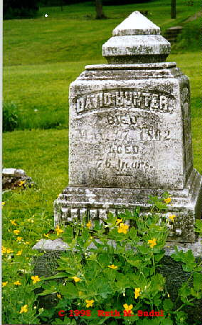
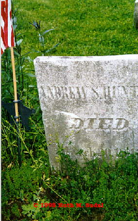

Poland Hunter & Jane Simpson

Cemetery Markers for David and Andrew Hunter, Old Methodist Cemetery,
Tionesta, Forest, PA
The Hunter families of Northwestern Pennsylvania are of Scotch-Irish
ancestry, a hardy race in which the Scotch stability, shrewdness, mental vigor
and physical energy are blended with the geniality, warmheartedness, ambitions
and versatile genius of the Irish. These Hunters come from County Tyrone and
County Down in Ireland. Poland Hunter , born in 1760 in Ireland, arrived in
Westmoreland, Pa in the latter part of the eighteenth century. His wife was
Jane Simpson , an English native, who is reputed to have married Poland
against her family's wishes. It is said that this is the same Simpson family
from which Ulysses S. Grant is descended.
Poland and Jane were of true pioneer stock and with all the hopefulness of the
Irish and the determination of the Scotch blood, built a rude cabin cleared a
field in the forest and thereby supplied the wants of their growing family.
Sixteen children were born to Poland and Jane, twelve of which grew to
maturity. In 1795 Poland Hunter and his family moved to Tionesta and as a
squatter appropriated the Island which bears his name, located at the mouth of
the Tionesta River. Here he built his permanent home, farmed the island and as
a permanent settler obtained from the state a patent establishing ownership.
Poland and Jane lived on the island most of their lives, although in later
years Poland moved to the west side of the river. At the base of the hill
known as Hog Back near Hunter Run he built the first grist mill in Forest
County. When he died Poland Island was left to his son William for taking care
of him during the last years of his life. Ownership of the island remained in
the Hunter family until 1864 when the heirs sold it and the land bordering it
on the river shore for $14,500. Later owners include: R.J. Harmon, Dan Mullet,
the Pioneer Material Company, Jamieson Lumber and Supply Company, Frank Ellis
and F.R. Lanson. Jack Sherman purchased it in February 1953 and established
the Tionesta Sand & Gravel Company.
In addition to farming, Poland engaged in lumbering, kindred pursuits in those
days.. The History of Warren County related the following anecdote about
Poland Hunter, "About the year 1810 while Henry Kinnear was acting in the
capacity of constable in Venango County, he had a warrant for the arrest of a
notorious ruffian and desperado named Polen Hunter. Against the threats of the
criminal, Kinnear attempted his forcible apprehension, when he received from
Hunter a wound in the hip from which he never recovered. It is said that he
succeeded in obtaining pecuniary redress for his injury."
The History of Forest County, published in 1868, tell the following story, “Poland
Hunter was a pretty rough specimen of Irish humanity. He would sometimes take
on more tanglefoot than he could walk straight under and staggering against a
stump would say , 'H--l agin a stump and Poland agin that.' Poland Hunter shot
a man by the name of Kinnear who had a warrant for his arrest. Hunter peppered
him with shot about the legs. The wound was not mortal. Hunter said that
shooting him had made him a storekeeper and if he would let him shoot him
again he would make a wholesale merchant out of him. William Hunter was a chip
of the old block. Whenever he got too much crooked whiskey his temper got the
best of him and everybody was in his way. He and a man by the name of Groff
always fought when they met. Groff was small but full of grit. In one of their
fights Hunter bit Groff's finger. The next day Groff was crossing the river to
Hunter's grist mill. He hallooed to Hunter when half-way over the river, I'm
bringing you another grist of finger nails to grind.”
Though there are no historical records documenting the reason for the warrant
on Poland Hunter, it is likely the result of legal dispute with John Range Sr.
over the ownership of Hunter's Island. Chief Cornplanter was called in to be a
witness and to testify that he had passed through the back channel in a canoe,
thereby proving that Hunter's Island was indeed an island. Hunter won the
first case ever tried in Venango County. Later on, Poland's son William would
marry Lt. John Range’s granddaughter, Sarah Range .
Poland Hunter prospered and survived the hard life of a pioneer until 1840,
dying at the age of eighty. His wife Jane, companion to all his privation and
success had died two years earlier. The party spirit ran high, both then and
now and Poland Hunter and his children were stalwart adherents of the
Democratic party. Burial was in the private Hunter cemetery on the west side
at the approach of the hill from Tionesta to Oil City.
Children of Poland Hunter and Jane Simpson:
-
- Harriet Hunter
-
- Jane Hunter
-
- John Hunter
-
- Moses Hunter
- Ellen Hunter
-
- George Hunter
-
- David Hunter (b. 1786, d. 17 May 1862 in Tionesta, Forest, PA,
buried in Old Methodist Cemetery, Forest, PA) married Mary Gates daughter
of Henry Gates and widow of Joseph Dale (d. 5 June 1872 and buried in
the Old Methodist Cemetery, Forest, PA)
-
- Andrew Hunter (b. 1788, d. 19 Apr 1814, buried in the Hunter
Family Cemetery, Tionesta, Forest, PA)
-
- William Hunter (b. 1794 in Westmoreland Co, PA) married on 6
Aug 1815 Sarah Range (b. 27 Mar 1800 in Hartford Co, MD)
-
- James Hunter (b. 1797, d. 20 May 1813, buried in the Hunter
Family Cemetery, Tionesta, Forest, PA)
Special thanks to James Ball for providing this information.
|